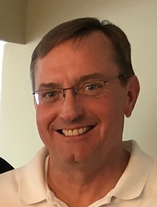

Achieve your potential.
"Providing Positive Guidance To Improve Your Life"
What is hypnotherapy?
Hypnotherapy is the use of hypnosis for self-improvement and/or the release of problems.
Hypnosis is a natural state of mind. Contrary to popular belief, hypnosis is NOT a "sleep" state, but is actually induced normally in everyday living. Each time we become engrossed in a novel or a movie, we are in a natural hypnotic trance. The hypnotherapist is a guide who facilitates the hypnotic process and uses this natural state to aid in self-improvement.
What are Emotional Freedom Techniques?
Based on the theory that the cause of all negative emotions is a disruption in the body's energy system, EFT creates profound effects on the body's subtle energies. It accomplishes this through an emotional form of acupuncture that does not require needles. Instead, a series of taps with the fingertips stimulate certain meridian energy points while the client is "tuned in" to the problem. Until recently, the subtle energies that circulate throughout the body have been largely ignored by western scientists. EFT considers these subtle energies to be the front running cause of emotional upsets. As a result, the technique can generate results that surpass those of conventional methods. EFT often provides relief for a very wide range of physical symptoms. This is abundantly clear in case histories which provide unmistakable evidence of the link between our physical ailments and our emotional issues.
What is Acupressure?

Acupressure is an ancient healing art that uses fingers to press key points on the surface of the skin to stimulate the body’s natural self-curative abilities. When these points are pressed, they release muscular tension, promote the circulation of blood and stimulate the body’s energy to aid healing.
My Story
In 1994, I was diagnosed with Thoracic Outlet Syndrome and Chronic Pain. Little did I know that the pain and challenges I faced were the beginning of my unique journey. It has been an unexpected journey that has totally changed my life and, I am very proud to say, the lives of others.
Like many, I exhausted the main stream medical approach for help with my pain and limitations. I began looking into the world of alternative therapies. Prior to the accident that started my difficulties, I did not know much about or think much of alternative methods.
What an education I have since received! I consider myself very fortunate that my first encounters with alternative practitioners were with very caring and talented people. My eyes were opened to many wonderful avenues that I didn’t know existed. The human mind became the focus of my studies. The more I studied and learned, the more fascinated I became with the mind’s power. The way in which our mind processes emotional and physical pain affects our life tremendously!
I understand the frustrations and fears that can accompany a long term ailment. I understand the emotional pains that past events can leave.
With these techniques, I have been able to help others with pain, fears, phobias, stress, anger, frustration, anxieties, panic attacks, cravings, allergies, sinus problems, headaches, sleep disorders, smoking, and more.
I know what these techniques have done for me! I encourage you to explore your personal processes and experience the benefits of these techniques.
The mind is an amazingly powerful tool. When focused positively it has immeasurable strength.
Testimonials
Don't take our word for it.
"I have had the distinct pleasure over the past few years to have worked with Scott in dealing with patients presenting to my practice with unique challenges, not amenable to standard or complementary medical intervention. These issues, to name a few, have involved conditions such as anxiety, chronic pain, obsessive compulsive disorders, insomnia and clinical depression. I have found that Scott’s approach using Emotional Freedom Technique, Relaxation, Hypnotherapy and Acupressure have been most beneficial in assisting these patients to gently work through their issues in subtle, non-threatening and yet very effective ways. He has a pleasant and forthright manner, a considerate and sensitive disposition and is articulate and highly skilled in the modalities he practices. He displays enthusiasm and energy in applying his knowledge base to helping resolve the issues which his clients present with. I have come to rely on Scott when faced with patients who are having subtle difficulties which “fall through the cracks” when using standard “in the box” medicine or integrative approaches which do not yield the desired outcomes."
–Dr. Thaddeus Srutwa, MD
"For some time now I have been referring clients to Scott for relief of many types of health problems. He has helped with problems typical to hypnosis such as anxieties, phobias and smoking cessation. Stubborn, serious health problems like ulcers, colitis, migraines, post traumatic stress, sleeping disorders and chronic pain, to name only a few, also respond to his gentle, yet powerful techniques. I can wholeheartedly endorse him as a caring and competent health practitioner. As a first place to start or as a last resort, Scott can be an excellent addition to your heath care team."
-Dr. Daniel Gleason
The Gleason Center
"Scott has helped me so much! Many people can study and practice, but few are truly gifted. I believe Scott has a very special gift. Not only is he gentle, knowledgeable and competent, he is blessed with sensitivity and incredible intuition. I highly and
confidently recommend Scott."
-L. G., West Olive
"Being a smoker for most of my adult life and trying about every stop smoking program available, I was not overly confident when I went to see Scott. That was November of 2003 and I have not smoked since! I am very proud to call myself a non-smoker."
-B. R., North Muskegon
"I was very skeptical of what Scott talked to me about. All this body energy and left/right hemisphere of the brain communications and so on, was a bit much for me to swallow. I can’t say that I fully believe in it all, but I can say, for whatever reasons, Scott has made me feel much better, both physically and mentally."
-D. B., Norton Shores
"Due to a back surgery that didn’t help my pain, I had to cancel an annual hunting trip with my sons. I saw Scott just twice and am very happy to say that I was able to reschedule our annual hunting trip and continue our tradition. The pain is not 100% gone, but it is much more manageable now and I am able to function a lot better. Scott also gave me “homework” to do on my own which helped to control the pain."
-J. S., St. Louis
"Due to an accident in the early 1990’s, I lost my sense of smell. While seeing Scott for a different reason, I brought this up. Amazingly, on the very first treatment, my sense of smell returned! That was a GREAT day and I have been able to smell ever since then."
-G. W., Muskegon
"After a surgery in 1976, I began having panic attacks. I’d wake up every morning with a panic attack. My daughter arranged for me to see Scott. I probably wouldn’t have seen Scott without her help. I am very thankful my daughter did this for me because in just one session with Scott, my panic attacks stopped and have not returned!"
-S. S., Las Vegas
"My son was about to be put on a steroid spray for his sinus problems. I didn’t want my son on steroids. I heard about Scott and as a last resort arranged to see him. Not only did he help my son immediately, but he also taught me some acupressure points so I could help my son if he needed help. I am very happy to report that my son is fine and is not taking any prescription medication at all!"
-S. H., Grand Haven
"My claustrophobia was there every day of my life. I was totally thrilled and shocked that, after just one treatment from Scott, it was gone and has never returned."
-T. D., Spring Lake
"Every day I would wake up with chronic headaches, some would develop into migraines. In only three sessions, Scott's anti-anxiety techniques freed up all that tension and my headaches are now almost non-existent."
-A.D., Spring Lake
Contact Me
 Scott Kennedy, C.C.H.
Scott Kennedy, C.C.H.
Van Wagner Business Center
17206 Van Wagoner Rd.
Spring Lake, Michigan 49456
[ View a Map ]
Tel: (616) 638-6236
E-Mail: This e-mail address is being protected from spambots. You need JavaScript enabled to view it